GBS.Market позволяет выполнить загрузку номенклатуры (справочник товаров) из документа формата Excel в базу данных программы (в каталог товаров).
Например, это может быть полезным для:
- первичного заполнения номенклатуры товаров из прайса поставщика
- переноса данных в GBS.Market из других учетных систем
Важно
Если необходима загрузка товаров с указанием остатка, розничной стоимости и закупочных цен, то выполнять импорт из Excel нужно через создание нового поступления из Excel.
Важно
Если в документе не указаны категории товаров и товары планируется загружать в существующую категорию, то перед загрузкой убедитесь, что у вас созданы необходимые категории.
Поддерживаемые форматы файлов
Поддерживается загрузка из файлов формата:
- .xls - Книга Excel 97-2000
- .xlsx - Книга Excel 2007-2010
Полезно
Наличие Excel на компьютере необязательно. Файлы для просмотра могут быть открыты в аналогичных программах, например, OpenOffice, LibreOffice.
Информация
Данные могут быть загружены так же из файлов формата CSV, для этого их необходимо открыть в Excel и сохранить в формате "Книга Excel".
Пример документа для загрузки
Возьмем для примера документ формата Excel выгруженный из другой учетной системы.
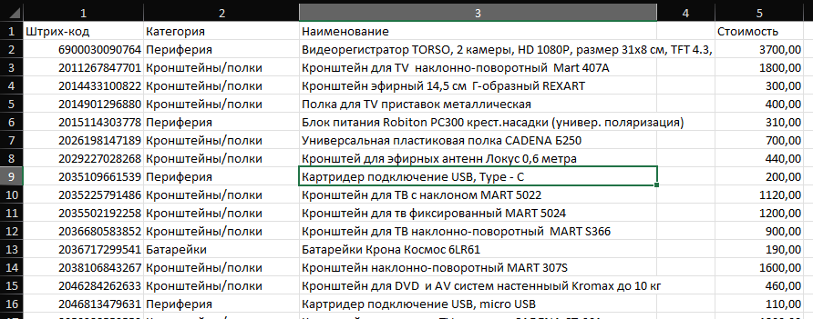
Пример прайс листа в Excel
Определение номеров столбцов
Для того чтобы начать загрузку данных из документа, необходимо определить номера для столбцов, из которых мы будем загружать информацию.
Инструкция как определить номера столбцов в Excel
В нашем примере значения получаются следующие:
- Штрихкод: 1
- Категория: 2
- Наименование: 3
Загрузка товаров из Excel
Информация
Загрузка товаров из Excel регулируется правом доступа "Создание товаров" и "Просмотр каталога товаров".
Видео-урок по настройке прав доступа.
Загрузить товары из Excel в GBS.Market можно в каталоге товаров. На главной форме откройте Товары – Каталог товаров.
В каталоге товаров в меню нажмите Файл.
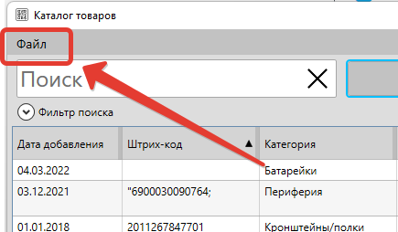
И выберите пункт "Загрузить из Excel"
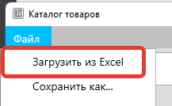
Форма загрузки товаров из Excel
Загрузка товаров осуществляется через форму загрузки, показанную на скриншоте ниже.
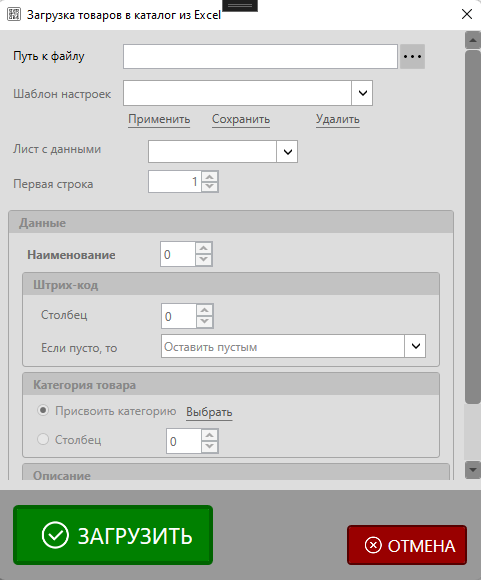
Путь к файлу
В форме загрузки нажмите кнопку обзора файлов, чтобы выбрать документ, из которого будет происходить загрузка товаров.
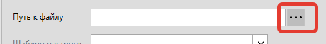
После нажатия на кнопку откроется окно проводника, в котором необходимо выбрать файл Excel.

Выберите файл и нажмите "Открыть". После этого в программе отобразиться путь к выбраному файлу.
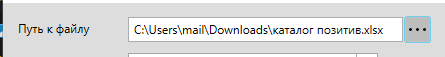
Шаблон настроек
Шаблоны настроек позволяют использовать ранее указанные параметры, без необходимости каждый раз заполнять настройки для однотипных документов.

Заполните номера столбцов и укажите другие опции, а затем сохраните шаблон. При следующей загрузке вы сможете повторно использовать шаблон, чтобы не заполнять такие же значения.
Лист с данными
Документ Excel может содержать один или несколько листов с данными. Выглядит это так:
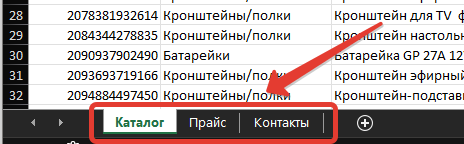
В форме загрузки необходимо выбрать тот лист, с которого будет происходить загрузка. Если в документе один лист, то он будет выбран автоматически.
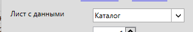
Первая строка
В некоторых случаях полезные данные могут начинаться не с первой строки. Чтобы минимизировать количество лишних данных, укажите строку, с которой начинается необходимая информация.
В нашем примере это строка №2, т.к. в самой первой строке расположены названия столбцов.
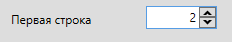
Наименование
Укажите номер столбца из которого для товаров будет заполнено наименование. В документе из примера это столбец №3
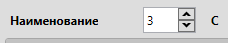
Строки, в которых для товара нет наименования, будут пропущены. Так же НЕ будут загружены товары, название для которых меньше 3 символов.
Штрихкод
Для поля "штрихкод" укажите номер столбца. В нашем примере это столбец №1 в документе Excel
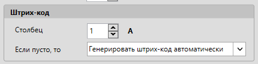
Параметр "если пусто, то" подразумевает действия программы в том случае, если значение в ячейке будет пустым. Доступны три варианта:
- Оставить пустым – штрихкод товара не будет указан
- Генерировать штрихкод автоматически – программа сгенерирует ШК автоматически. Префикс для таких ШК будет установлен указанный в настройках
- Пропустить строку – данные из строки не будут использоваться
Категория товара
Для присвоения категории товару можно выбрать несколько вариантов действия.
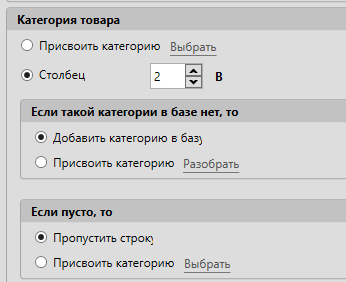
Если в документе категория не указана – можно задать одну категорию на все загружаемые товары.
В документе, который мы взяли в качестве пример, категории для товаров указаны. В этом случае можно использовать загрузку категории из документа. Столбец с категорией в нашем случае – №2.
Если такой категории в базе нет, то
Здесь необходимо указать логику поведения программы в том случае, если категории с названием из документа не удалось найти в базе данных.
- Добавить категорию в базу – будет создана категория с названием из ячейки.
- Присвоить категорию – будет присвоена выбранная категория
В нашем случае мы будем создавать категорию, т.к. в базе данных еще нет категорий.
Если пусто, то
В случае, если в ячейке категории пусто, то программа может выполнить следующие действия:
- Пропустить строку – данные из такой строки будут пропущены
- Присвоить категорию – будет присвоена выбранная категория
Описание
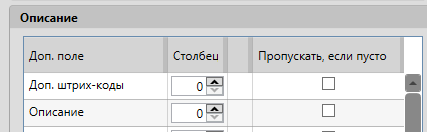
Кроме основных параметров товара из Excel могут быть загружены в т.ч. такие данные:
- описание товара
- дополнительные штрихкоды
- значения дополнительных полей
Укажите номера столбцов для таких данных, если необходимо.
Если включить опцию "пропускать, если пусто", то строка с пустым значением поля будет пропущена.
Видео-урок: как добавить доп. поля для товаров и контактов
Загрузить
Проверьте, что все данные были введены верно и нажмите "Загрузить", чтобы программа начала обработку документа и загрузку данных в каталог товаров.
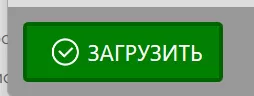
После завершения загрузки программа отобразит уведомление с количеством загруженных позиций.
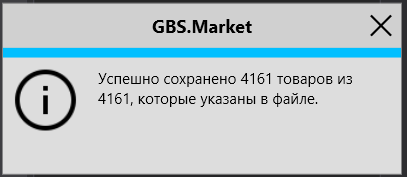
Проверка результата
Если все сделано верно, то в каталоге товаров появятся те записи, которые были в выбранном документе Excel
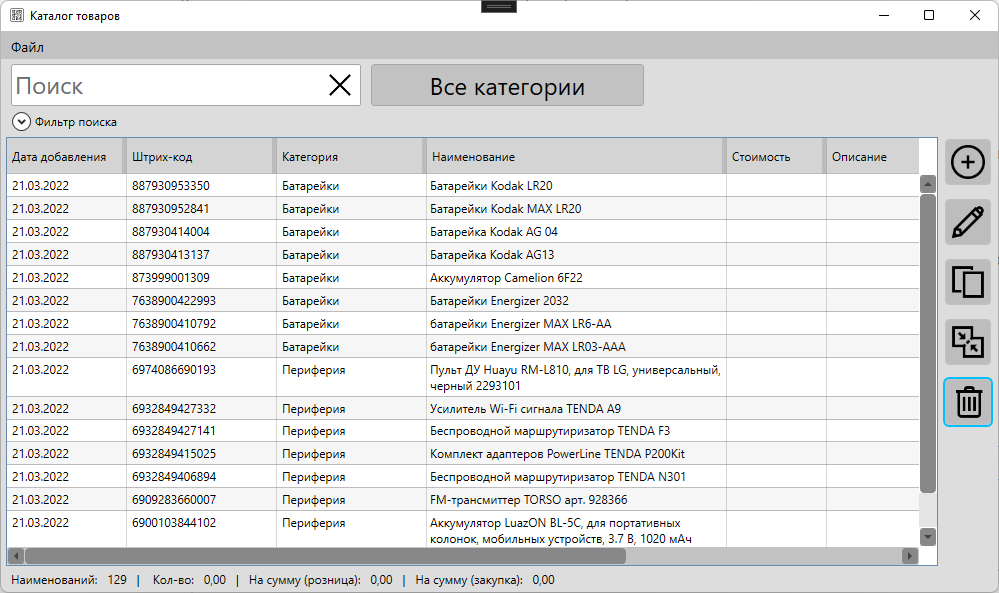
Каталог товаров с загруженными данными из Excel